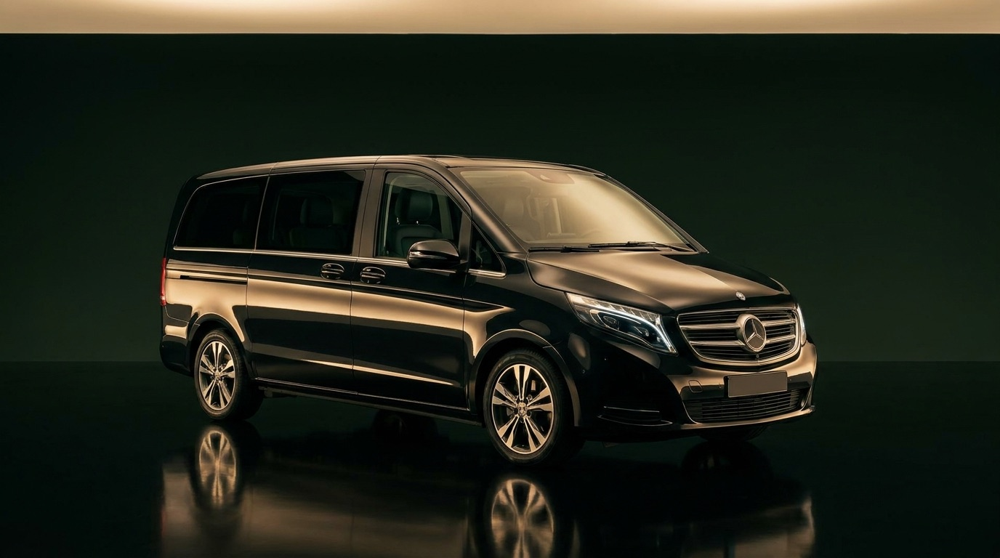

2 tot 3 uurHele jaar
Rondrit Amsterdam
Langs de grachtengordel, de Jordaan, het Museumplein en de Zuidas. Uitstappen waar u een foto wilt maken, en door wanneer u er klaar voor bent.
Op aanvraagPrijs vragen
Een dag op pad met een eigen chauffeur. Geen treinen zoeken, geen parkeerplaats zoeken, geen groep waar u op moet wachten. U stapt in bij uw hotel of voordeur en bepaalt zelf hoe lang u ergens blijft.

Mercedes V-Klasse · tot 8 personenDit zijn de bekendste. Alles is aan te passen: langer blijven, iets overslaan of twee bestemmingen combineren.
Langs de grachtengordel, de Jordaan, het Museumplein en de Zuidas. Uitstappen waar u een foto wilt maken, en door wanneer u er klaar voor bent.
De bloementuinen in Lisse, geopend in het voorjaar. Wij brengen u tot aan de ingang en staan er weer als u klaar bent, dus u hoeft niet op een bus te wachten.
De molens aan de Zaan, op een half uur rijden van Amsterdam. Vaak gecombineerd met Volendam en Marken tot een volle dag.
Het dorp zonder autowegen, met grachtjes en bruggetjes. Een rit van ongeveer anderhalf uur heen, dus een dag waarop u rustig de tijd heeft.
Negentien molens op werelderfgoedlijst, bij Rotterdam. Goed te combineren met een rondrit door Rotterdam of een stop in Delft.
Twee oude vissersdorpen aan het water, dicht bij elkaar. Een korte rit vanuit Amsterdam en daarom populair als eerste uitstapje.
Het regeringscentrum, het Mauritshuis en daarna het strand. Een dag met stad en zee door elkaar, zonder dat u hoeft over te stappen.
Moderne architectuur, de Markthal en de haven. Een heel ander Nederland dan Amsterdam, op een klein uur rijden.
Over de grens voor een dag België. Langer onderweg, maar u rijdt in één keer door en hoeft niets over te stappen.
U hoeft niet te kiezen uit een lijstje. Vertel ons waar u heen wilt, hoe laat u wilt vertrekken en hoe lang u wilt blijven, dan maken wij er een dag van en noemen u vooraf een vaste prijs.
Vertel ons uw planGeen rondleiding met een microfoon, maar iemand die rijdt, wacht en meedenkt.
Waar u heen wilt, met hoeveel personen en hoe laat. U krijgt een vaste prijs voor de hele dag terug.
Bij uw hotel, appartement of thuis. Geen verzamelpunt waar u naartoe moet lopen.
Langer blijven of eerder door kan gewoon. De chauffeur wacht en rijdt verder wanneer u wilt.
Aan het einde van de dag brengt dezelfde chauffeur u terug naar waar u bent opgehaald.
Onze chauffeurs kennen de weg en de omgeving en vertellen graag wat, maar het zijn geen opgeleide gidsen. Wilt u een echte rondleiding bij een bestemming, dan kunt u die ter plaatse boeken.
Dat hangt af van de bestemming, het aantal uren en hoeveel personen er mee gaan. U krijgt vooraf een vaste prijs voor de hele dag, zodat u niet achteraf wordt verrast.
Nee, entreegeld voor bijvoorbeeld de Keukenhof of een museum regelt u zelf. Wij rekenen alleen het vervoer en de wachttijd van de chauffeur.
Ja. Wilt u ergens langer blijven of juist iets overslaan, zeg het tegen uw chauffeur. Loopt de dag daardoor flink uit, dan overleggen wij even over de extra tijd.
Tot vier personen rijdt u in een sedan, tot acht personen in de V-Klasse. Bent u met meer, laat het weten, dan regelen wij een tweede auto.
Voor een dagtocht raden wij aan om ruim vooruit te plannen, zeker in het voorjaar en in de zomer. Dan weten wij zeker dat er een auto en chauffeur voor u vrij zijn.
Een bekende bestemming of uw eigen route. U krijgt vooraf een vaste prijs voor de hele dag.